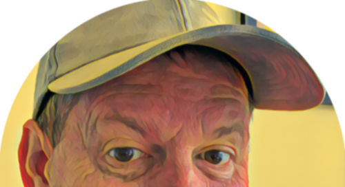
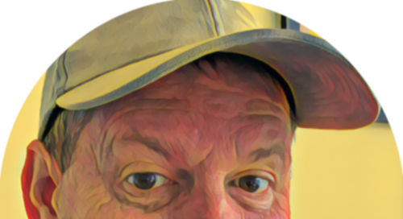

I'm Peter.
Welcome to my place!


I have developed an exceptional range of diverse skills from a background in the telecommunications industry. This covers coordinating and scheduling resources for network change projects, excellent attention to detail for the quality management of Operational Acceptance, strong customer focus from leading Service Assurance teams, and a very advanced technical aptitude from provisioning and troubleshooting communication networks. I have a passion for technology, constantly desiring to take the initiative to continually challenge and improve ways of working. I always strive hard to build strong relationships with all those I work with, to earn respect and trust in all my work.
Playing my guitar...Usually if i'm not doing my kids homework for them, you'll find me in my 'office' playing my guitar (a honeyburst modern player Telecaster!) way too loud. If i'm not there you'll need to look further, like on a lake or river somewhere fishing from my kayak!
Give me a call or send an email. Let me know what you think!
Contact Me